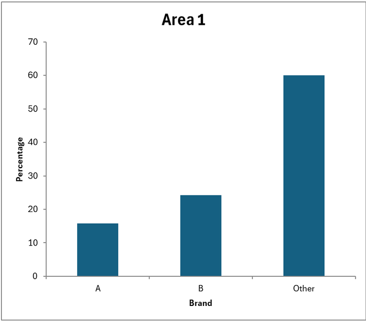
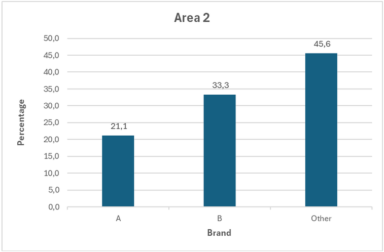
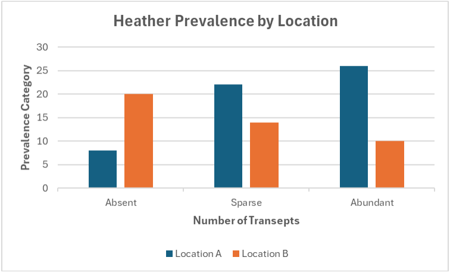

Charts: Visual Representation and Perceptual Implications
This report analyses the use of bar charts and histograms as graphical tools to represent statistical distributions and intergroup comparisons. These visual formats help detect patterns such as contrasts, trends, or clustering in sample data. Their interpretative strength lies in design rigour: axis calibration, scale choices, category order, and spacing all significantly influence how data are perceived.
Visualisation must therefore be critically assessed, not only as a descriptive method, but also as a cognitive construct shaped by human perception. Recent research highlights how design choices can mislead or bias interpretation if not methodologically controlled. The effectiveness of a chart thus depends not just on what it shows, but on how it guides perception.
This analysis is grounded in the statistical frameworks developed by Field (2013) and Moore et al. (2020), and enriched by insights from Mesguich (2021), Andry et al. (2022), and Yau (2013), who explore the intersection between visual encoding, perceptual psychology, and data storytelling.
Bar Chart Interpretation: Departmental Average Salaries


Context and Objective
This activity involves interpreting a bar chart comparing the average salaries across different departments. The aim is to identify salary disparities, potential outliers, and relative differences, using visual inspection rather than statistical inference. Each bar represents the mean salary within a given department.
Observations:
- The bar chart reveals substantial variation in average salaries across departments.
- The IT department displays the highest average salary, while Customer Service ranks the lowest.
- The Marketing and Finance departments have closely aligned averages, suggesting potential similarity in role valuation or skill-based compensation.
Interpretation
The graphical display enables immediate comparison, highlighting that certain departments offer significantly higher remuneration. However, the absence of error bars or measures of dispersion (e.g. standard deviation) limits the depth of interpretation. Visual gaps may reflect true differences, but without inferential testing, such conclusions remain descriptive.
It is also crucial to consider the effect of scale and bar ordering: departments arranged arbitrarily may hinder the detection of patterns such as progression or clusters. A sorted bar chart could improve interpretability.
Critical Considerations:
- Perceptual bias: Bar length exaggeration may occur if the axis does not start at zero.
- Design clarity: Uniform bar width and spacing help avoid misinterpretation.
- Contextual variables: Average salary alone omits key factors like role diversity, experience level, or workforce size per department.
Conclusion: The bar chart serves as an effective visual tool for initial comparison of average salaries across departments. It provides accessible insights but should not substitute for a more rigorous statistical analysis when aiming to draw conclusions about equity, trends, or performance. The use of bar charts aligns with best practices in descriptive analytics, provided visual choices are methodologically controlled.
Histogram Interpretation: Distribution of Monthly Incomes
Context and Objective This task focuses on interpreting a histogram representing the distribution of monthly incomes within a company. Unlike bar charts, histograms group continuous numerical data into intervals, making them suitable for assessing the shape, spread, and central tendency of the distribution.

Observations:
- The distribution is right-skewed: most employees earn between £1,000 and £3,000, with a gradual decrease in frequency as income increases.
- A long tail extends beyond £4,000, indicating a smaller group of high earners.
- The modal class (most frequent income range) lies in the £2,000-£2,500 interval.
Interpretation
The histogram suggests income inequality within the organisation. The right-skewed shape implies that while most employees earn near the lower to middle range, a minority receives substantially higher salaries, pulling the mean upwards. In such cases, the mean is not a reliable indicator of central tendency; the median would offer a more representative measure.
Furthermore, the absence of clear class boundaries and bin width justification can impact clarity. Histogram design choices, such as scale, interval consistency, and axis labelling, play a critical role in how the data is perceived.
Critical Considerations
- Skewness: Influences how central tendency is interpreted, a right-skewed distribution typically means the mean > median.
- Bin size: Too narrow leads to noise, too wide may obscure relevant details.
- Context: No demographic or departmental breakdown limits interpretability, patterns may differ across subgroups.
Conclusion
The histogram effectively reveals the income distribution pattern within the sample and highlights potential salary disparities. However, without supplementary statistics (e.g. median, standard deviation) or inferential analysis, conclusions remain descriptive. As with all visual representations, careful attention must be paid to design decisions to ensure valid interpretation.
Comparative Use of Bar Chart and Histogram


Context and Objective
This task invites a comparative analysis between two common graphical tools, the bar chart and the histogram, used to visualise data distributions. The objective is to assess the advantages and limitations of each format when representing categorical versus continuous variables.
Key Distinctions:
- Bar Chart: Designed for categorical data (e.g. departments, regions). Bars are separated, and each one represents a distinct, non-numeric category.
- Histogram: Used for continuous numerical data. Bars are adjacent and grouped into intervals, showing frequency distributions over a numerical scale (e.g. income, age).
Interpretation
While both graphs convey frequency, they do so through different structural logics. The bar chart facilitates category comparison, while the histogram illustrates patterns such as skewness, modality, and dispersion within continuous data. Improper substitution of one for the other can lead to misinterpretation, for instance, applying a histogram to categorical data would suggest continuity where none exists.
Design Considerations:
- Spacing: Bar charts use gaps to distinguish categories; histograms use no gaps to emphasise continuity.
- Order: Categories in bar charts can be reordered for clarity; histogram bins follow a fixed numerical progression.
- Axes: In bar charts, the x-axis lists discrete labels; in histograms, it reflects a numerical scale with defined intervals.
Conclusion: Choosing the correct visual representation is not neutral: it shapes how viewers interpret the data. Bar charts excel at comparing distinct groups, whereas histograms reveal structural patterns in numerical variables. Ensuring alignment between data type and graph format is essential for statistical integrity and cognitive clarity.
Note: The content above is a summarised version of the diagram activity.
The full worksheet is available below: